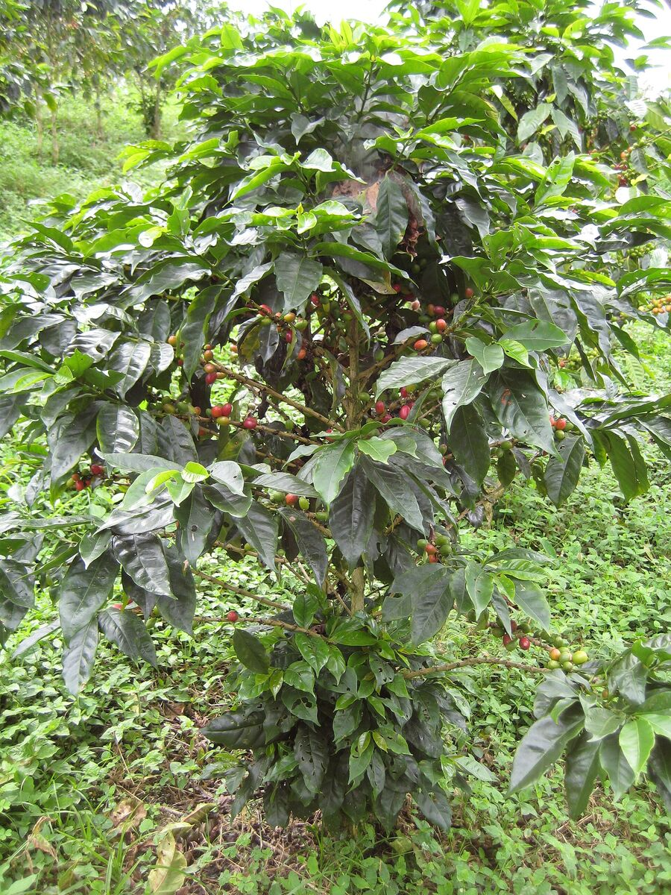
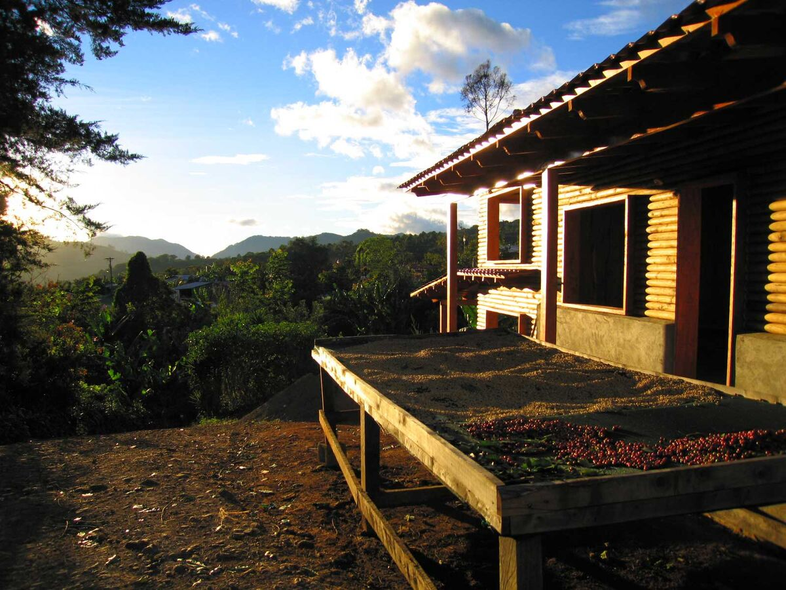

Ten bags from Finca Los Naranjos
Our first coffee bought straight from a farm took two harvests, one failed sample and a lot of voice notes in Spanish that I had to play twice. It went on the shelf last week.


In October 2024 a box of twelve sample bags arrived from the importer in Bristol we buy most of our green coffee through. Eleven of them were the usual autumn Colombians. They were clean and sweet and a bit samey on the table. The twelfth was a 300-gram bag with a handwritten label, "Los Naranjos, Bruselas, lavado, 1.720 m", and it was the best coffee on the table by some distance. I scored it 86.5. Dev, who is stricter than me, gave it 86.
I asked the importer who grew it. The answer was Yeison Muñoz, who farms four and a half hectares above Bruselas, a village in the south of Huila, with his mother Doris. They had sold the rest of that harvest to the cooperative in town at the going price, because nobody had asked for it separately. There was nothing left for us to buy that year.
Asking for next year's
So we asked for next year's instead, and that took most of 2025. Yeison doesn't use email. The importer's buyer in Neiva, Catalina, carried messages back and forth for the first few months, and later Yeison and I sent each other voice notes directly. My Spanish is school Spanish from 1984. I played most of his messages twice and some of them four times.
We agreed three things early on:
- We would take ten 70-kilo bags. That's about what we sell of one single origin in four months.
- We would pay a fixed price per kilo, agreed in February before the harvest, and not whatever the market price happened to be on the day he delivered.
- If the coffee scored below 85 when it reached Bristol, we would still take it, at a lower price that we also agreed in February.
Yeison asked for the last one. A few years ago a buyer rejected one of his lots when it arrived, and he had to sell it on at a loss.

The sample that failed
The first pre-shipment sample arrived in May and tasted faintly of wet cardboard. It wasn't much, but it was enough. Catalina drove up to the farm and found the problem in about ten minutes. A wet spell in April had kept the parchment on the drying beds for nineteen days instead of the usual twelve, and the bottom layer on two of the beds had gone musty. Yeison took those two beds out of our lot and sold them in town. The second sample, from the beds that had dried properly, was as good as the coffee we had tasted the autumn before.

I'm telling you this because it's the part that doesn't usually make it into a coffee description. The coffee in our bags is the coffee from the good beds. The bad beds still happened, and Yeison still lost money on them.
What it cost
People ask, so here are our numbers. The price we fixed in February turned out to be 31% more than the cooperative in Bruselas was paying in the week Yeison delivered. Then there's the dry mill, export, shipping to Felixstowe, the importer's margin and a pallet lorry up the M1. All in, the coffee cost us £9.10 a kilo by the time it was in our unit. Our house espresso, Neepsend, costs us £6.40.
Roasting takes off about 15% of the weight, and after that come the bag, the label, the postage and our time. A 250-gram bag of Los Naranjos is £12.50, which is the most we have ever charged for a coffee. We make less on it than on anything else we sell. I'm fine with that for one coffee out of six.
"Send me a photo of the bag when it's in the shop. My mother wants to see it."
How it tastes, and how we roast it
It's a washed coffee, mostly Caturra with some Castillo. It tastes of red apple and panela, with a bit of orange peel at the end. It isn't a wild coffee. It's very clean and very sweet, and it gets better as it cools, which is what I want from something I'll drink every day.
We roast it light for filter. The beans come out at 203°C, about ten and a half minutes in, a minute and twenty seconds after first crack. We tried a darker roast for espresso and it lost the apple, so for now it's sold as filter only. If you brew it as espresso anyway, pull it long, around 1 to 2.5, and expect it to be bright.
Our first roast was on Tuesday 29 September. Dev took the photo Yeison had asked for on the Saturday, on the counter between the decaf and the scales. Yeison sent back a voice note of Doris laughing.
Next year
They've offered us fifteen bags from the 2026 harvest. We've said yes to twelve, because I would rather run out in March than still be roasting it in June. If you like this one, the newsletter is where we'll say when the next lot lands. The brewing notes in our filter recipe suit it well.